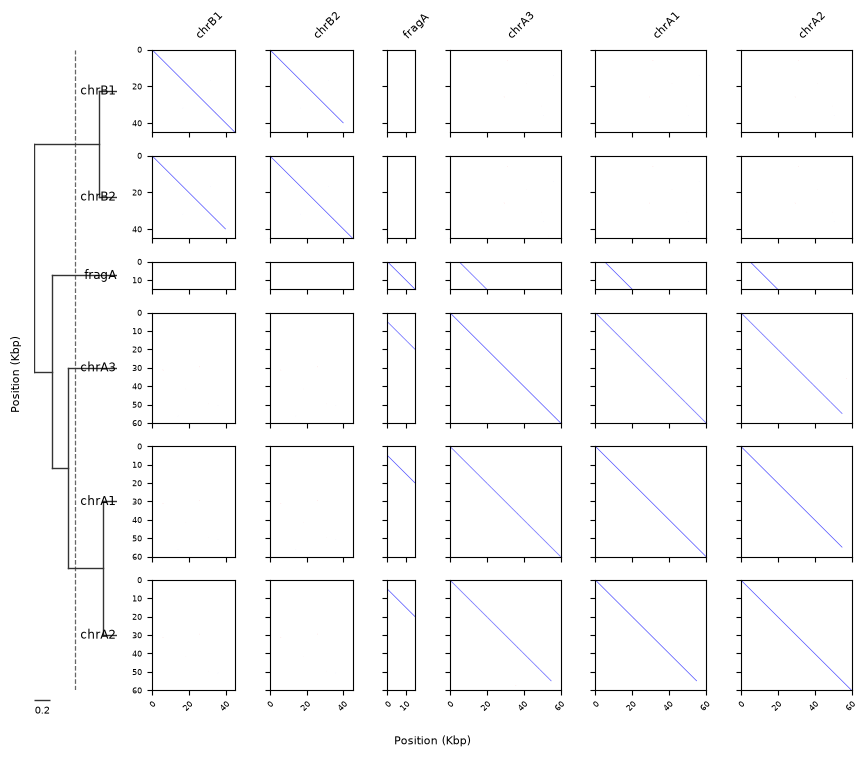
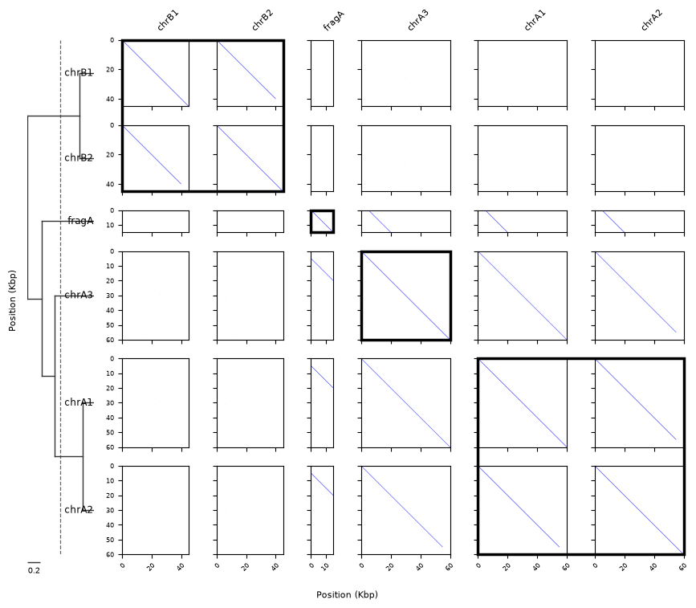
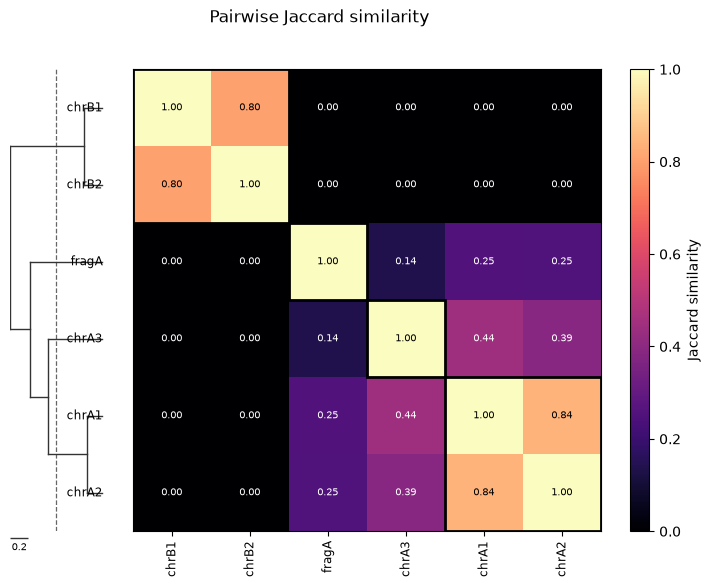
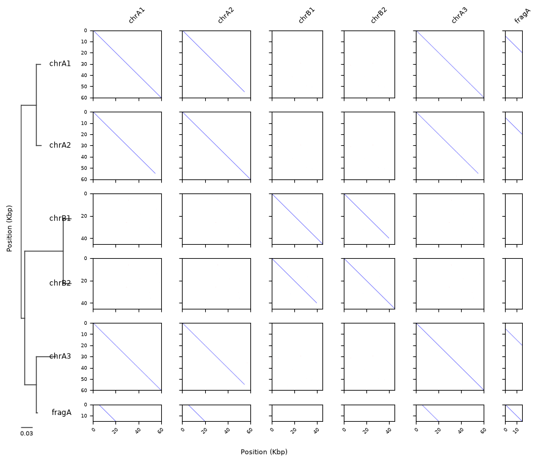

Clustering & Trees¶
This tutorial builds a self-alignment of a set of related sequences, computes pairwise similarity with sourmash sketches, draws a hierarchical clustering tree on the dot-plot matrix, assigns the sequences to clusters with an identity + coverage rule, and renders a similarity heatmap with the tree and cluster outlines.
It needs the optional cluster extra:
See Similarity & Clustering for guidance on choosing between the metrics used below.
Build a sequence family¶
We synthesise six sequences with known relationships:
- chrA1 / chrA2 — structural variants: chrA2 shares its first 55 kb with chrA1 exactly, with a different 5 kb tail.
- chrA3 — chrA1 with 2% uniformly random SNPs (≈98% identical, but sharing no long exact stretches — a deliberate edge case, see below).
- chrB1 / chrB2 — an unrelated structural-variant pair.
- fragA — a 15 kb fragment nested inside chrA1 (it will only cluster with its parent when coverage is not required to be reciprocal).
import random
from dot_explorer import DotPlotter, SequenceIndex
rng = random.Random(11)
def random_seq(n):
return ''.join(rng.choice('ACGT') for _ in range(n))
def mutate(seq, rate):
bases = 'ACGT'
out = []
for base in seq:
if rng.random() < rate:
out.append(rng.choice([b for b in bases if b != base]))
else:
out.append(base)
return ''.join(out)
chrA1 = random_seq(60_000)
chrA2 = chrA1[:55_000] + random_seq(5_000) # SV pair: 55 kb exact overlap
chrA3 = mutate(chrA1, 0.02) # ~98% identical, SNP-diverged
chrB1 = random_seq(45_000)
chrB2 = chrB1[:40_000] + random_seq(5_000) # second SV pair
fragA = chrA1[5_000:20_000] # nested fragment of chrA1
seqs = {
'chrA1': chrA1, 'chrA2': chrA2, 'chrA3': chrA3,
'chrB1': chrB1, 'chrB2': chrB2, 'fragA': fragA,
}
index = SequenceIndex(k=15)
for name, seq in seqs.items():
index.add_sequence(name, seq)
names = list(seqs)
names
['chrA1', 'chrA2', 'chrA3', 'chrB1', 'chrB2', 'fragA']
Sketch and compare¶
compute_sketches builds one FracMinHash sketch per sequence. These are
short sequences, so we lower scaled to 50 (one hash per ~50 bp) — this
keeps enough hashes per sketch for stable estimates and tight ANI
confidence intervals. Abundance tracking is on by default (sourmash's
-p abund), which the angular metric requires.
from dot_explorer import SketchParams, compute_sketches, pairwise_similarity
params = SketchParams(ksize=21, scaled=50, track_abundance=True)
sketches = compute_sketches(index, names, params=params)
jaccard = pairwise_similarity(sketches, metric='jaccard')
angular = pairwise_similarity(sketches, metric='angular')
The raw similarity matrix is a numpy array with named rows/columns —
print it, or export it with to_csv:
import numpy as np
print('Jaccard similarity:')
print(' ' + ' '.join(f'{n:>6}' for n in jaccard.names))
for name, row in zip(jaccard.names, np.round(jaccard.values, 3)):
print(f'{name:>7} ' + ' '.join(f'{v:6.3f}' for v in row))
Jaccard similarity:
chrA1 chrA2 chrA3 chrB1 chrB2 fragA
chrA1 1.000 0.841 0.442 0.000 0.000 0.254
chrA2 0.841 1.000 0.391 0.000 0.000 0.253
chrA3 0.442 0.391 1.000 0.000 0.000 0.138
chrB1 0.000 0.000 0.000 1.000 0.802 0.000
chrB2 0.000 0.000 0.000 0.802 1.000 0.000
fragA 0.254 0.253 0.138 0.000 0.000 1.000
Cluster and draw the tree on the matrix¶
linkage_from_similarity runs UPGMA on 1 − similarity;
Tree.from_linkage turns the linkage into a tree whose leaf order fixes
the plot's row and column order. The dashed line marks a similarity
cutoff of 0.5 (drawn at distance 1 − 0.5 from the tips).
from dot_explorer import Tree, linkage_from_similarity
Z = linkage_from_similarity(jaccard, method='average')
tree = Tree.from_linkage(Z, jaccard.names)
print('Tree order:', tree.leaf_names())
plotter = DotPlotter(index)
fig = plotter.plot(tree=tree, tree_cutoff=0.5, figsize_per_panel=1.6)
Tree order: ['chrB1', 'chrB2', 'fragA', 'chrA3', 'chrA1', 'chrA2']

Assign clusters: identity ≥ 80% over ≥ 80% reciprocal coverage¶
The "80/80" rule combines two matrices: ANI as the identity estimate and
containment as the coverage analogue. With reciprocal=True both
directions must clear 80% coverage — so fragA, though 100% identical
to part of chrA1, stays out of the chrA cluster (chrA1 is only ~25%
covered by the fragment).
A k-mer caveat worth understanding: containment counts exact
shared k-mers, so uniformly scattered SNPs depress it steeply — at 98%
identity roughly 1 − 0.98²¹ ≈ 35% of all 21-mers are destroyed. Watch
chrA3 below: its ANI to chrA1 is ~0.98, but its containment is only
~0.65, so the 80% coverage bar excludes it. The 80/80 rule with sketch
containment therefore groups sequences sharing long (near-)exact
stretches, like the SV pairs here; for SNP-diverged families, lower the
coverage cutoff (roughly coverage × ANI^k) or cluster on a similarity
cutoff with assign_clusters instead.
from dot_explorer import assign_clusters_dual
ani = pairwise_similarity(sketches, metric='ani')
containment = pairwise_similarity(sketches, metric='containment')
for a, b in [('chrA1', 'chrA2'), ('chrA1', 'chrA3')]:
i, j = ani.names.index(a), ani.names.index(b)
print(
f'ANI {a} vs {b}: {ani.values[i, j]:.4f} '
f'(95% CI {ani.ci_low[i, j]:.4f}-{ani.ci_high[i, j]:.4f}), '
f'containment {containment[(a, b)]:.3f}'
)
print(f"fragA contained in chrA1: {containment[('fragA', 'chrA1')]:.3f}")
print(f"chrA1 contained in fragA: {containment[('chrA1', 'fragA')]:.3f}")
clusters = assign_clusters_dual(
ani,
containment,
identity_cutoff=0.80,
coverage_cutoff=0.80,
reciprocal=True,
)
clusters.clusters
ANI chrA1 vs chrA2: 0.9958 (95% CI 0.9947-0.9967), containment 0.916
ANI chrA1 vs chrA3: 0.9777 (95% CI 0.9752-0.9801), containment 0.623
fragA contained in chrA1: 1.000
chrA1 contained in fragA: 0.254
{'cluster_1': ['chrA1', 'chrA2'],
'cluster_2': ['chrA3'],
'cluster_3': ['chrB1', 'chrB2'],
'cluster_4': ['fragA']}
Passing the result as cluster_borders outlines each cluster's block of
panels in the matrix (bold black boxes). The two SV pairs cluster;
fragA fails the reciprocal-coverage bar and chrA3 the containment
bar (the SNP caveat above), so both sit in singleton clusters.

Similarity heatmap¶
The same matrix as a heatmap: tree left of the y-axis, cluster outlines, and the colour scale bar at the right. Pick any matplotlib colormap.
from dot_explorer import plot_similarity_heatmap
fig = plot_similarity_heatmap(
jaccard,
tree=tree,
clusters=clusters,
cutoff=0.5,
cmap='magma',
annotate=True,
title='Pairwise Jaccard similarity',
)

Export the results¶
Both the matrix and the cluster assignments write straight to CSV:
jaccard.to_csv('similarity_matrix.csv')
clusters.to_csv('cluster_assignments.csv')
print(open('cluster_assignments.csv').read())
contig,cluster
chrA1,cluster_1
chrA2,cluster_1
chrA3,cluster_2
chrB1,cluster_3
chrB2,cluster_3
fragA,cluster_4
Using your own tree¶
A phylogenetic tree from IQ-TREE (.treefile) or any newick file plugs
into the same tree= argument via Tree.read — tip labels must match
the sequence names exactly (a mismatch raises an error listing what is
missing on each side), and the tree then fixes the contig order in place
of the sorting options:
with open('my_tree.treefile', 'w') as fh:
fh.write(
'((chrA1:0.01,chrA2:0.012)98:0.04,((chrB1:0.02,chrB2:0.02)99:0.1,'
'(chrA3:0.05,fragA:0.002)75:0.03):0.01);'
)
user_tree = Tree.read('my_tree.treefile')
print('User tree order:', user_tree.leaf_names())
fig = plotter.plot(tree=user_tree, figsize_per_panel=1.6)
User tree order: ['chrA1', 'chrA2', 'chrB1', 'chrB2', 'chrA3', 'fragA']
